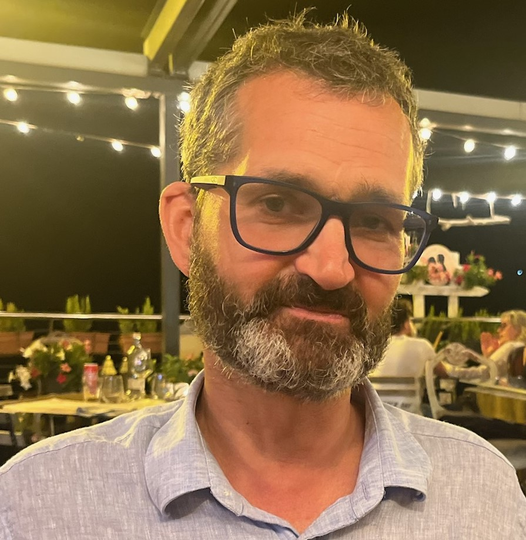

Publisert: 24.9.2025
Velkommen til denne nettsiden! Håper du finner den interessant. Jeg har laget denne mest for å fortelle om den reisen jeg har hatt de siste årene. Jeg vet det er en del mennesker som har de samme tankene som meg, og ønsker å dele min historie. Kanskje du blir nysgjerrig på disse tankene? Eller, hvis du deler mitt syn allerede, blir inspirert til å dele dine egne tanker med andre?
Under er et bilde av meg, Daniel Berge Sollien, jeg har jobbet hele min yrkeskarriere i oljebransjen, men har nå sluttet av samvittighetsårsaker. Beveger du deg rundt på disse sidene vil du finne en del om den reisen jeg har hatt. Men, først litt om hvem jeg er:

Jeg er en person med mange interesser. Jeg er veldig glad i utendørsaktiviteter, spesielt når jeg kan være ute i naturen, lidenskaplig interessert i musikk, bekymrer meg for verden, elsker kona og ungene høyt, har en virkelig rar nerdete glede av å programmere, og mye mer. Det jeg er mest opptatt av for tiden, er det noen kaller metakrisen, andre omtaler som menneskehetens utfordringer. Jeg har fordypet meg i dette temaet i over ti år nå, og jeg klarer ikke å stoppe, for det er stadig mer å lære. Jeg lærer mer om situasjonen ved å lese bøker, lytte til podcaster, og ved å diskutere det med andre. Det har ført til at jeg har satt meg inn i temaer innen filosofi, psykologi, sosiologi, alternative økonomiske teorier, og klimavitenskap.
I dag vet vi mer om forholdet mellom kunnskap og makt, enn om forholdet mellom kunnskap og frigjøring
Marina Garcés
De siste årene jeg engasjert meg for den endringen som jeg mener verden trenger, blant annet deltatt i den offentlige debatten, for jeg mener vi er på vei i feil retning, egentlig på mange plan. Er du nysgjerrig på hvordan jeg har engasjert meg så kan du ta en titt på denne siden.
Et av målene med denne nettsiden er å dele noen av de personene, bøkene og podcastene som har inspirert meg. Ta en titt.
Hvis du har lyst til å vite mer om bakgrunnen min, så kan du ta en titt på cv'en min.